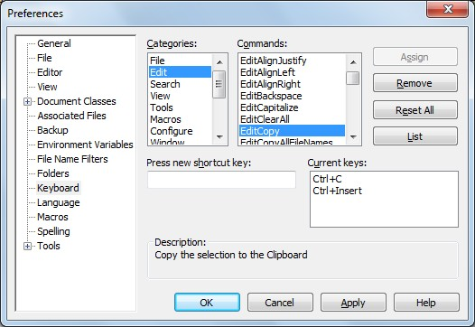

[BACK]
The most fundamental concept in XBN-PhraseExpress is "TextPad-bootstraps". Before almost anything in XBN-PhraseExpress can function, TextPad-bootstraps must be installed. TextPad-bootstraps are commands that are built into the TextPad application, such as
TextPad > Configure > Preferences > Keyboard > Categories > "Edit" > Commands > "EditCopy"
Only the XKP and TPKC projects have TextPad-bootstraps. While other projects require certain built-in TextPad commands, these are "non-bootstrap" (nbs) commands, and are installed in a different way.
Contents:
[GO] XBN-PhraseExpress project dependencies[GO] TextPad-bootstraps: Format and specifications (3 phrases: main, escaped, tp-key-press)[GO] Phrase and file locationsIn TextPad version 7.0.9, there are 332 built-in commands. 26 of them are TextPad-bootstraps (8%).
[top] [PREV -- NEXT] Installing all TextPad-bootstraps: Step-by-stepThis section describes how install TextPad bootstraps and the nbs-commands as required by the XBNPE-Search and replace (SNR) project (the "Clear" and "Set" commands).
This and the next three steps are also used to prepare for a TPKC remote-build request.
Print out the TextPad all-command-list (there's no need to save it at this time).
Mark all lines containing TextPad-bootstraps (and SNR-required commands):
"Regular expression"^(BookmarkNext|BookmarkToggle|DocumentStart|EditCopy|EditCopyTaggedLines|EditCut|EditCutTaggedLines|EditDupLine|EditPaste|FileClose|FileManage|FileNew|FileOpen|FileQuickOpen|FileSave|MatchCaseClear|MatchCaseSet|MatchWordClear|MatchWordSet|Preferences|RegexClear|RegexSet|SearchFiles|SearchFind|SearchFindNext|SearchGoto|SearchReplace|SelectAll|ToggleWordWrap|WordLeftExtend|WordRightEnd|WordRightEndExtend)\b[Mark All] buttonTextPad > Edit > Copy Other > Bookmarked lines[BACK] [PREV -- NEXT] Installing all TextPad-bootstraps: Step-by-stepIf the previous step is done immediately after installing TextPad, below is the result. Notice there are twelve commands that have no key-commands.
BookmarkNext F2 BookmarkToggle Ctrl+F2 DocumentStart Ctrl+Home EditCopy Ctrl+C Ctrl+Insert EditCopyTaggedLines EditCut Shift+Delete Ctrl+X EditCutTaggedLines EditDupLine EditPaste Ctrl+V Shift+Insert FileClose FileManage F3 FileNew Ctrl+N FileOpen Ctrl+O FileQuickOpen Ctrl+Shift+O FileSave Ctrl+S MatchCaseClear MatchCaseSet MatchWordClear MatchWordSet Preferences Ctrl+Q, P RegexClear RegexSet SearchFiles Ctrl+F5 SearchFind F5 SearchFindNext Ctrl+F SearchGoto Ctrl+G SearchReplace F8 SelectAll Ctrl+A ToggleWordWrap Ctrl+Q, W WordLeftExtend Ctrl+Shift+B Ctrl+Shift+Left WordRightEnd WordRightEndExtend
[BACK] [PREV -- NEXT] Installing all TextPad-bootstraps: Step-by-stepEach unassigned command must be given at least one key-command in
TextPad > Configure > Preferences > Keyboard
Here they are ordered by category:
FileClose, FileManage, FileNew, FileOpen, FileQuickOpen, FileSaveEditCopy, EditCopyTaggedLines, EditCut, EditCutTaggedLines, EditDupLine, EditPasteBookmarkNext, BookmarkToggle, MatchCaseClear, MatchCaseSet, MatchWordClear, MatchWordSet, RegexClear, RegexSet, SearchFiles, SearchFind, SearchFindNext, SearchGoto, SearchReplace, Preferences, ToggleWordWrapDocumentStart, WordLeftExtend, WordRightEnd, WordRightEndExtendSelectAll[BACK] [PREV -- NEXT] Installing all TextPad-bootstraps: Step-by-stepIf you are preparing for a remote-build request, proceed here.
If you are installing TextPad-bootstraps, proceed here.
[BACK] [PREV -- NEXT] Installing all TextPad-bootstraps: Step-by-stepReprint your TextPad all-command-list (by repeating the first three steps: one, two, three), but use this regex to only mark TextPad-bootstraps in the XKP-project:
^(EditCopy|EditCut|EditDupLine|FileClose|FileNew|FileSave|DocumentStart|WordRightEnd|EditPaste|SelectAll|WordLeftExtend|WordRightEndExtend|ToggleWordWrap)\b
Here is the result from the "tp_frsh_instl" tp-all-cmd-list (see the bottom of the linked section):
DocumentStart Ctrl+Home EditCopy Ctrl+C Ctrl+Insert EditCut Shift+Delete Ctrl+X EditDupLine Ctrl+Shift+Alt+K EditPaste Ctrl+V Shift+Insert FileClose Alt+W FileNew Ctrl+N FileSave Ctrl+S SelectAll Ctrl+A ToggleWordWrap Ctrl+Q, W WordLeftExtend Ctrl+Shift+B Ctrl+Shift+Left WordRightEnd Alt+Right WordRightEndExtend Shift+Alt+Right
[BACK] [PREV -- NEXT] Installing all TextPad-bootstraps: Step-by-step"tp_frsh_instl" and "blank template" file-sets to get you started (choose one or the other, whichever works best given your key-command setup).DocumentStart Ctrl+Home EditCopy Ctrl+C EditCut Ctrl+X EditDupLine Ctrl+Shift+Alt+K EditPaste Ctrl+V FileClose Alt+W FileNew Ctrl+N FileSave Ctrl+S SelectAll Ctrl+A ToggleWordWrap Ctrl+Q, W WordLeftExtend Ctrl+Shift+Left WordRightEnd Alt+Right WordRightEndExtend Shift+Alt+Right
[BACK] [PREV -- NEXT] Installing all TextPad-bootstraps: Step-by-stepRepeat the steps for tp-bootstraps as required by the TPKC-project. Here is the regex to mark all lines:
^(EditCopyTaggedLines|EditCutTaggedLines|BookmarkNext|BookmarkToggle|SearchFiles|FileManage|FileOpen|FileQuickOpen|SearchFind|SearchFindNext|SearchGoto|Preferences|SearchReplace)\b
As described in the main-phrase, TPKC-bootstraps must have x-key-presses.
BookmarkNext F2 BookmarkToggle Ctrl+F2 EditCopyTaggedLines Ctrl+Shift+Alt+. EditCutTaggedLines Ctrl+Shift+Alt+, FileManage F3 FileOpen Ctrl+O FileQuickOpen Ctrl+Shift+O Preferences Ctrl+Q, P SearchFiles Ctrl+F5 SearchFind F5 SearchFindNext Ctrl+F SearchGoto Ctrl+G SearchReplace F8
[BACK] [PREV -- NEXT] Installing all TextPad-bootstraps: Step-by-stepImport the four bootstrap phrase-files to your TPKC-user-directory in PhraseExpress (locations).
Test all TextPad-bootstraps by executing the utility
testtpbsxkptpkc
Follow the instructions carefully.
[top] TextPad-bootstraps: Format and specificationsEach TextPad-bootstrap has three phrases:
The values of these three phrases are conceptually equal: They each represent, in three different formats, the single key-command (the bootstrap-key-command) associated to a particular built-in TextPad command--one that happens to be a TextPad-bootstrap. All main phrases (for a single project--either XKP or TPKC) are stored in a single phrase-file. The "non-main" phrases are stored in another file. All three phrases are critical to XBN-PhraseExpress.Displayed in uncompressed format. See phrase-format specifications
zTPCopy -- TextPad built-in command: Edit > EditCopy
{#CTRL -chars c}{#insert zTSlp}{#sleep 10}
zTPCopyEsc
\\\{#CTRL -chars c\\\}\\\{#insert zTSlp\\\}\\\{#sleep 10\\\}
zTPCopyTPKeys
Ctrl+C
[top] TextPad-bootstraps: Phrase and file locationsAll TextPad-bootstraps, for both the XKP and TPKC projects are stored in a single directory: the root directory of your TPKC-user-directory.
{#insert zXPROOT_DIR_tpkcUsrCfgUserBase_M_tudn}tp_bootstraps_for_xkp_project.px.txt (tpfi--for tpkc-user-dir name="tp_frsh_instl", blank template)
tp_bootstraps_for_tpkc_project.px.txt (tpfi, template)tp_bootstraps_for_xkp_project_esc_tpk.px.txt (tpfi, template)
tp_bootstraps_for_tpkc_project_esc_tpk.px.txt (tpfi, template) XBNPE: Parent-folder >
XBN-PhraseExpress >
(go) XBNPE-TPKC: TextPad Built-in commands >
XBNPE-TPKC: User-specific phrases: [TPKC_USER_DIR_NAME]
TextPad-bootstrapsSplitting TextPad-bootstraps into these two files makes remote-builds possible.
[top] XBN-PhraseExpress project dependenciesThe most fundamental project in XBN-PhraseExpress is the
XBNPE-Key-presses (XKP) project
The only project that directly depends on it is the
TextPad built-in command (TPKC) project
All other projects in XBN-PhraseExpress depend (directly) on TPKC.
These two foundational projects depend on TextPad-bootstraps. There are TextPad-bootstraps exclusive to the XKP-project, and some exclusive to TPKC. These projects cannot be installed until their tp-bootstraps are installed first. TextPad-bootstraps are built-in TextPad commands that must be manually installed by you.
No other XBN-PhraseExpress projects have TextPad-bootstraps. Other projects, such as
XBNPE-Search and Replace (SNR)
also require certain built-in TextPad commands to exist, but they are considered "non-bootstrap" (nbs) commands and are configured in a different way: in your TPKC user-specific command-configuration.
(The SNR-project is the only project directly dependent on TPKC. All other XBN-PhraseExpress projects depend on SNR.)
[BACK] TextPad-bootstrap: Main phraseThe main TextPad-bootstrap phrase is what actually triggers a built-in TextPad command. You are encouraged to call these phrases from your own PhraseExpress code. The main phrases (for each project) are stored in a single phrase-file.
zTPCopy -- TextPad built-in command: Edit > EditCopy
{#CTRL -chars c}{#insert zTSlp}{#sleep 10}
The XKP-project requires "raw" PhraseExpress key-presses in the phrase body, where each key-press is followed by a call to zTSlp
zTPFileOpen -- TextPad built-in command: File > FileOpen
{#insert zCpOO}{#sleep 1750}
The TPKC-project requires x-key-presses (each of which integrate zTSlp).
"zTP". Example:
zTPCopy -- TextPad built-in command: Edit > EditCopy
zTSlpzTpkcMillsBtwMultiKeyKCs{#insert zTPCopy}{#sleep 50}
zTpkc[abrv]DfltPostKcSlpMils[BACK] TextPad-bootstrap: Escaped (literalized) phraseThe escaped TextPad-bootstrap phrase is exactly equal to its main phrase, except that all curlys are escaped. This and the TextPad-key-press phrase are considered the "non-main" tp-bootstrap phrases, and are both stored together in a single phrase-file. The escaped tp-bootstrap phrase
zTPCopyEsc
\\\{#CTRL -chars c\\\}\\\{#insert zTSlp\\\}\\\{#sleep 10\\\}
"Esc" at the end.
"zTPCopyEsc"{#CTRL -chars c}{#insert zTSlp}{#sleep 10}
\\\{#CTRL -chars c\\\}\\\{#insert zTSlp\\\}\\\{#sleep 10\\\}(There are utilities to assist you.)
[BACK] TextPad-bootstrap: TextPad key-press phraseThe TextPad-key-press phrase in a TextPad-bootstrap has the same key-press(es) as its escaped and main counterparts, but with key-presses as specified in
TextPad > Configure > Preferences > Keyboard
Specifically, it contains the exact key-press(es) as printed in the TextPad all-command-list. This and the escaped phrase are stored together in a single file.
zTPCopyTPKeys Ctrl+C
Name: Must be equal to the name of the main tp-bootstrap phrase, with "TPKeys" at the end. Example:
zTPCopyTPKeys
Must be the exact value printed in the TextPad all-command-list, for this particular command. For example, the built-in TextPad command
EditCopy
is a TextPad-bootstrap. Its main-phrase name is
zTPCopy
An example key-command is
Ctrl+C
as listed in
TextPad > Configure > Preferences > Keyboard > Categories > "Edit" > Commands > "EditCopy"
More examples (note the 1 multi-key key-command)
Since the value of this phrase is not PhraseExpress code, it should therefore have no SLEEP or calls to zTSlp. TP-key-press phrases are used by the first step of the first TPKC user-build-process (sub-proc-10) to delete all bootstrap-kcs from the tp-all-cmd-list.
Below are two screenshots.
"EditCopy" command, and its key-command "Ctrl+C" (the first is its bootstrap-kc, the rest its nbs-kcs)EditCopy.

[top] TextPad-bootstraps: Utilitiesxhtk)Follow all instructions carefully.
testtpbsxkp: Verifies all XKP-required tp-bootstraps.testtpbstpkc: Verifies all TPKC-required tp-bootstraps.testtpbsxkptpkc: Calls testtpbsxkp and then testtpkeyphrasec.xhtb)All these utilities require the name of the main tp-bootstrap phrase to be in a variable named
zvBTSTRP_PHRS_NM
zTPBtstrpEscKC_M_bspm: Gets the escaped key-command, after unescaping itzTPBtstrpEscPhrsNm_M_bspm: Gets the name of the phrase containing the escaped key-command.zTPBtstrpTPKeys_M_bspm: Gets the value of the TextPad key-press.zTPBtstrpTPKeysPhrsNm_M_bspm: Gets the name of the phrase containing the TextPad key-press.tpbsutildemo
{#SETPHRASE -description zvBTSTRP_PHRS_NM -content zTPCopy -autotext zvBTSTRP_PHRS_NM -folder ctvv_folder}
{#insert zTPBtstrpEscPhrsNm_M_bspm}:{#ENTER}{#TAB}
{#insert zTPBtstrpEscKC_M_bspm}{#ENTER}{#BKSP}
{#insert zTPBtstrpTPKeysPhrsNm_M_bspm}:{#ENTER}{#TAB}
{#insert zTPBtstrpTPKeys_M_bspm}{#ENTER}
Output:
zTPCopyEsc:
{#CTRL -chars c}{#insert zTSlp}{#sleep 10}
zTPCopyTPKeys:
Ctrl+C
[top] TextPad-bootstraps: TerminologyA "TextPad-bootstrap" is a built-in TextPad command that is critical to either the XKP or TPKC-project. The key-command assigned to a TextPad-bootstrap is called a "bootstrap key-command". Any other key-commands assigned to a tp-bootstrap (or any key-command assigned to any other built-in TextPad command), are each called a "Non-BootStrap key-command" or "Non-BootStrap kc", or "nbs-kc".
A "Non-BootStrap command", or "nbs-command", is simply a command that is not a tp-bootstrap--whether or not it has a key-commands assigned to it. An "nbs-phrase" is a phrase that triggers a non-bootstrap command.
The "primary key-command" for a TextPad command is:
[top] For XBNPE-developers only: Promoting an nbs-command to a tp-bootstrap(See: locations)
{#insert zXPROOT_DIR_tpkc}/textpad__tpkc/for_v_7_0_9/user_config/
"Esc" and "TPKeys")BookmarkPrev zTPBookmarkGTPrev Srchmkprv __ES__ 100 {#insert zDOWN3}
BookmarkPrev zTPBookmarkGTPrev Srchmkprv yes 100 {#insert zDOWN3}
zTpkcSrchmkprvIsBtstrp_yes
{#insert zXPROOT_DIR_AG_tpkc}\cmd_cfg_global__bldprc06\search\search_BookmarkPrev.px.txt
search_BookmarkPrev.px.txt
zTestAllXKPTextPadBootstraps
zTestAllTpkcTextPadBootstraps
{#insert zXPROOT_DIR_tpkc}/textpad__tpkc/for_v_7_0_9/user_config/tp_ALL_cmds_pcddmenu.txt
"[BS]" to its ddmenu-entry.sub_build_proc.html#02.[top] Commands in the "Characters" category may not be TextPad-bootstrapsThe "Characters" category is the only one in which commands do not have names. Instead, the "name" of each command is the character itself. This is unacceptable to the TPKC-project. The TPKC-build process (sub-build-proc-11) therefore changes each to a specific name**. For example, 'Ã' is changed to "Char14AUpperTilde". Since this translation does not occur until after the TPKC-project is installed and built (meaning all build processes from 02 through 14 are successfully executed), no commands in this category may not be used as TextPad-bootstraps, until after all TPKC build processes have been successfully executed.
This restriction only applies to the XKP and TPKC projects.
**(see the bottom of section two, under TPKC-build: Before everything else: Manually creating the raw-global-configuration, in the TPKC-build-process technical documentation)